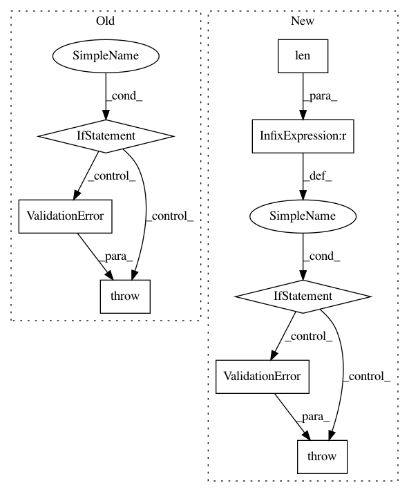

bf4d4be450616eeb0252b276c9febc4a50e83ace,api/data_refinery_api/views/dataset.py,,validate_dataset,#Any#,35
Before Change
// If they want "ALL", just make sure that the experiment has at least one downloadable sample
if value == ["ALL"]:
if data.get("quant_sf_only", False):
try:
experiment = Experiment.public_objects.get(accession_code=key)
except Exception as e:
raise serializers.ValidationError("Experiment " + key + " does not exist")
samples = experiment.sample_set.filter(
// We only want samples with a quant.sf file associated with them
results__computedfile__filename="quant.sf",
results__computedfile__s3_key__isnull=False,
results__computedfile__s3_bucket__isnull=False,
)
if samples.count() == 0:
raise serializers.ValidationError(
"Experiment "
+ key
+ " does not have at least one sample with a quant.sf file"
)
else:
try:
experiment = Experiment.processed_public_objects.get(accession_code=key)
except Exception as e:
raise serializers.ValidationError(
"Experiment " + key + " does not have at least one downloadable sample"
)
// Otherwise, we will check that all the samples they requested are downloadable
else:
accessions.extend(value)
if len(accessions) == 0:
After Change
else:
accessions.extend(value)
if len(non_downloadable_experiments) != 0:
raise serializers.ValidationError(
{
"message": "Experiment(s) in dataset have zero downloadable samples. See `non_downloadable_experiments` for a full list",
"non_downloadable_experiments": non_downloadable_experiments,
}
)
if len(accessions) == 0:
return
if data.get("quant_sf_only", False):
In pattern: SUPERPATTERN
Frequency: 3
Non-data size: 8
Instances
Project Name: AlexsLemonade/refinebio
Commit Name: bf4d4be450616eeb0252b276c9febc4a50e83ace
Time: 2020-07-06
Author: willvauclain.dev@gmail.com
File Name: api/data_refinery_api/views/dataset.py
Class Name:
Method Name: validate_dataset
Project Name: ray-project/ray
Commit Name: 1d532d1cb8b829bdf7055a22c206032ca0b72e46
Time: 2020-04-02
Author: rkooo567@gmail.com
File Name: python/ray/dashboard/metrics_exporter/schema.py
Class Name: BaseModel
Method Name: parse_obj
Project Name: AlexsLemonade/refinebio
Commit Name: a971f44300932557e9a806c991c5e81eedf62e4e
Time: 2020-06-16
Author: willvauclain.dev@gmail.com
File Name: api/data_refinery_api/serializers.py
Class Name:
Method Name: validate_dataset